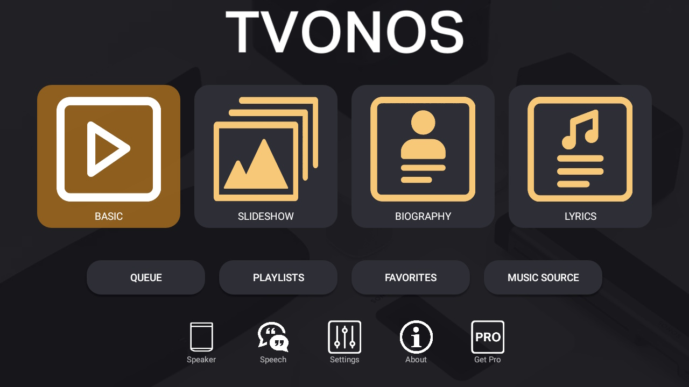
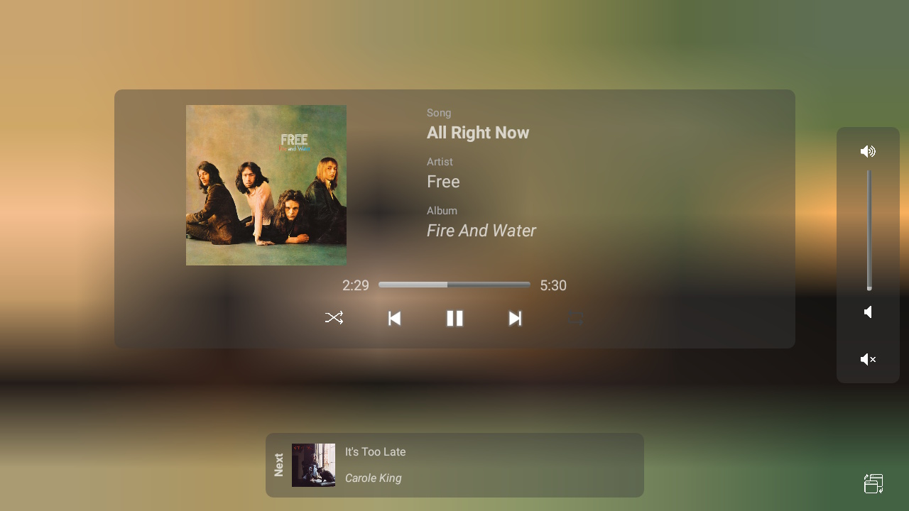
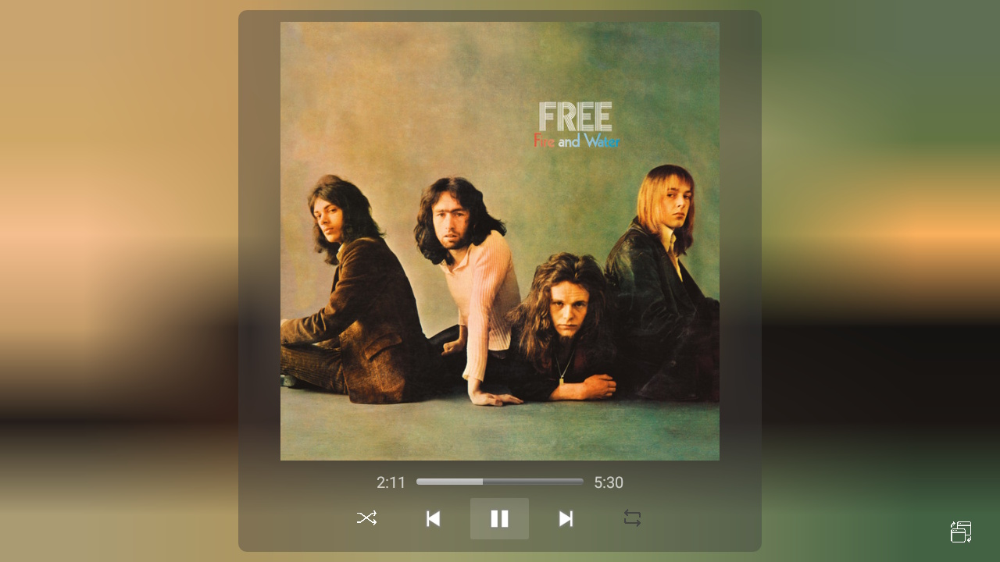
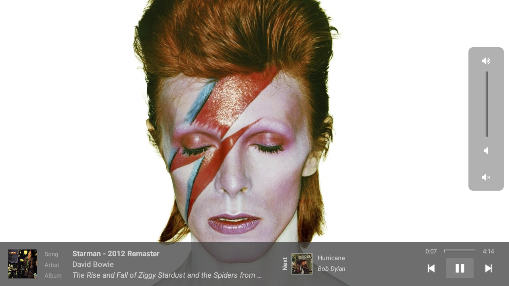
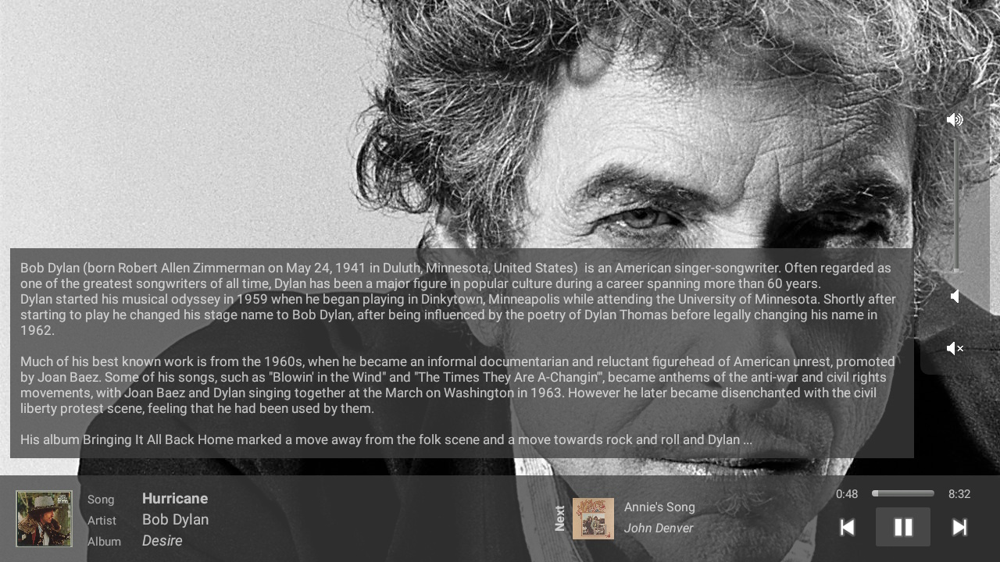
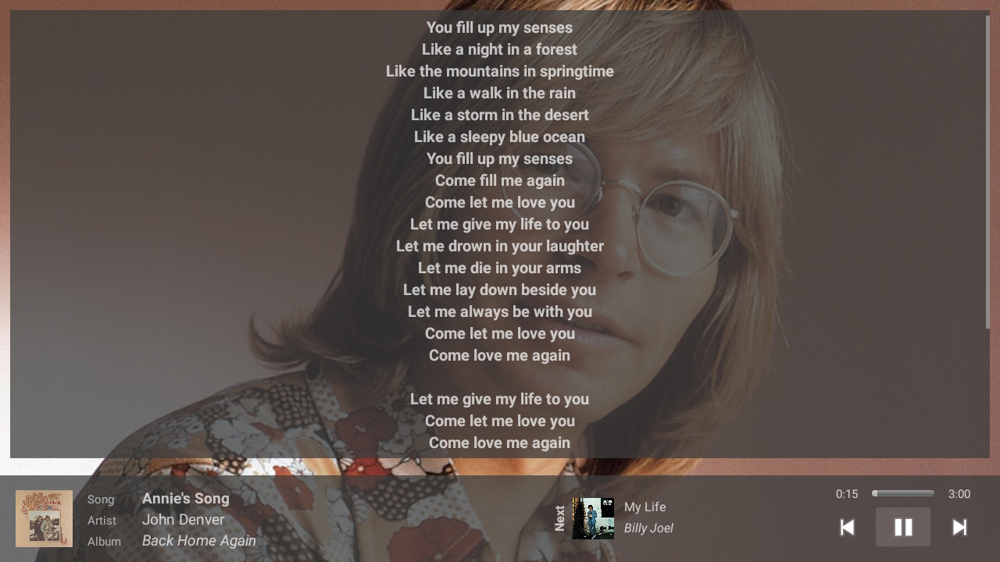

Main Menu
TVONOS has a simple main starting page that is easy to use on both TV and touch screen devices. Some menu items/buttons can be hidden from the settings if not required.
Media Rich Sonos Controller
for Android and Amazon devices

TVONOS has a simple main starting page that is easy to use on both TV and touch screen devices. Some menu items/buttons can be hidden from the settings if not required.

A simple controller that displays the Album Art for the playing track with Sonos controls and details of the next track to be played.

A basic display that just shows the Album Art full screen with the basic Sonos controls.

Full screen slideshow of various images (and occasional canvas videos) of the playing artist with Sonos controls and details of the next track to be played.

Displays a biography of the playing artist with an image background

Displays the lyrics for the playing track with an image background
In addition to the Players that show various media and images the following features are also available in TVONOS
A selection of TV remote control keys are set to perform basic play and volume operations in addition to player shortcuts.
A phone/tablet Widget provides basic controls without the need to open TVONOS.
While TVONOS is running some basic voice commands such as play, pause, skip are supported.
Beta support for sending a message to be read out on a Sonos Speaker.
View, navigate and play from your queue, playlists or favorites.
Play from local and remote libraries and streaming services with the ability to import already configured services.
How TVONOS behaves is very configurable via the application settings.
TVONOS can be used free for up to 1 hour a day, heavy users can sign up for the Pro version that has unlimited usage.